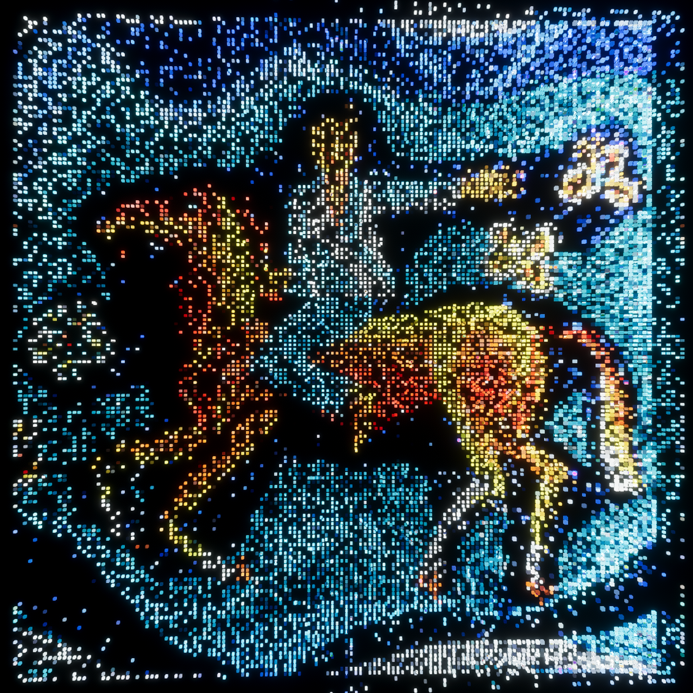
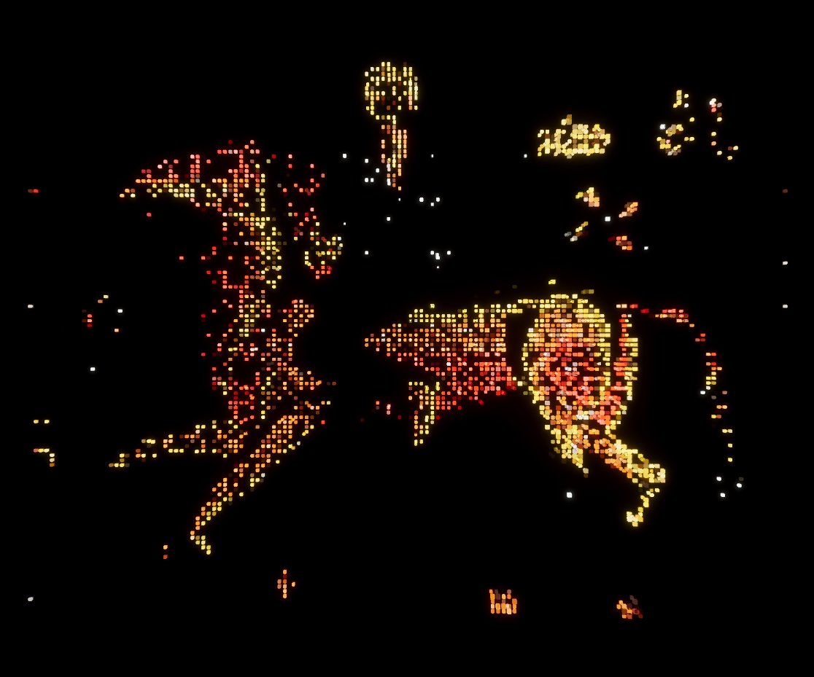
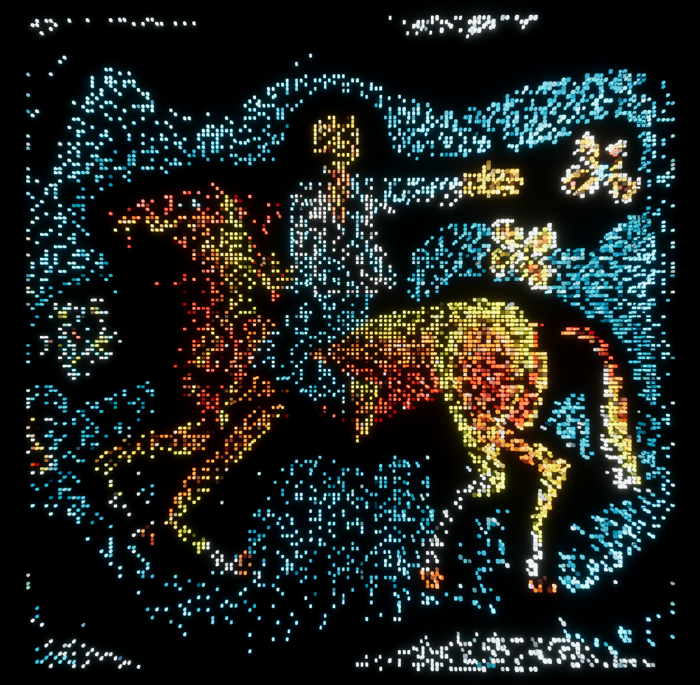
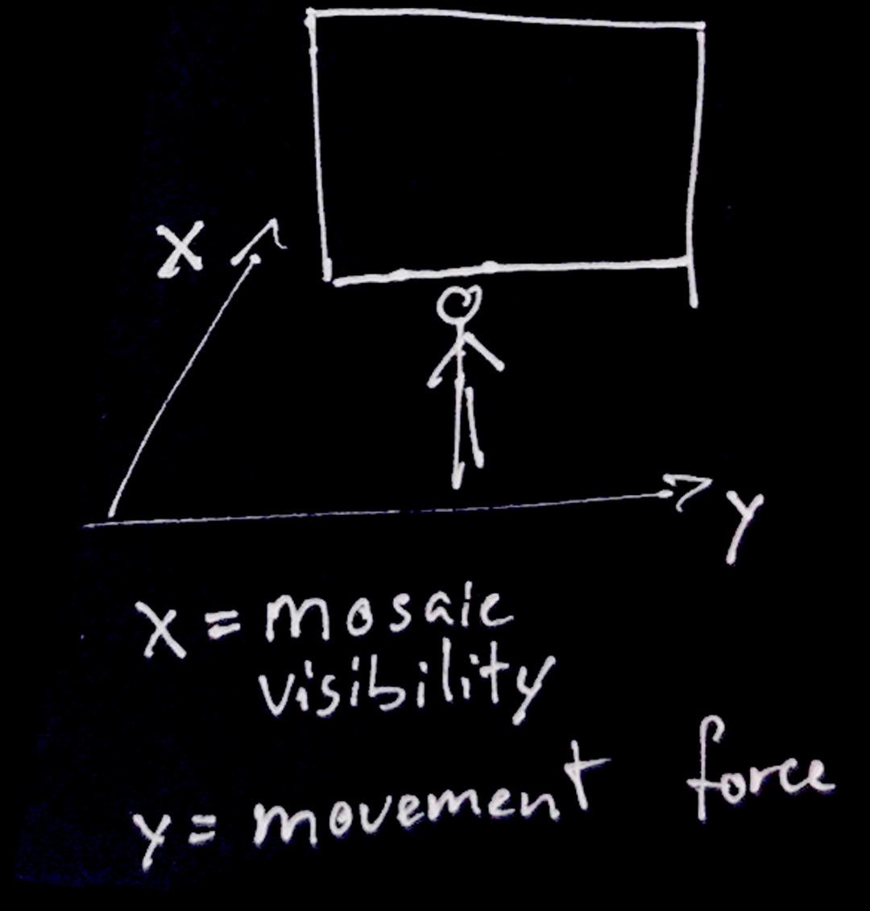

Mosaic
2025
Interactive Installation
In this interactive installation, a damaged mosaic gradually reveals its details as the viewer approaches, exploring the relationship between cultural visibility, destruction, and preservation.
During the 20th century, under Soviet rule, Ukrainian culture and language faced systematic repression. Despite this, monumental mosaics became an important medium for the development and expression of Ukrainian cultural identity. Their imagery drew on regional traditions, folklore, mythology, and local histories, reflecting the cultural context in which each work was created.
Often found on bus stops, public buildings, and modernist architecture, these mosaics are frequently categorised simply as “Soviet” heritage. This framing overlooks their distinct Ukrainian cultural significance and reflects a colonial perspective on Ukraine’s artistic history.
Software: Unity
Imput: Kinect




Test with sound and different mosaic